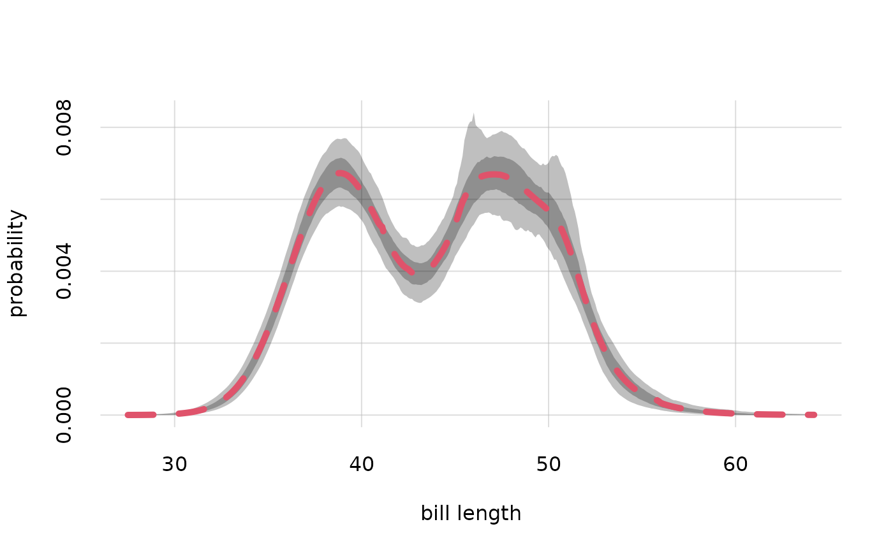

Utility function to plot pairs of quantiles obtained with Pr().
Usage
plotquantiles(
x,
y,
xdomain = NULL,
alpha.f = 0.25,
col = palette(),
border = NA,
type = "n",
...
)Arguments
- x
Numeric or character: vector of x-coordinates. See
flexiplot().- y
Numeric: a matrix having as many rows as
xand an even number of columns, with one column per quantile. Typically these quantiles have been obtained withPr(), as their$quantilesvalue. This value is a three-dimensional array, and one of its columns (corresponding to the possible values of theXargument ofPr()) or one of its rows (corresponding to the possible values of theYargument ofPr()) should be selected before being used asyinput.- xdomain
Character or numeric or
NULL(default): vector of possible values of the variable represented in the x-axis, if thexargument is a character vector. The ordering of the values is respected. IfNULL, thenunique(x)is used.- alpha.f
Numeric, default 0.25: opacity of the quantile bands,
0being completely invisible and1completely opaque.- col
Fill colour of the quantile bands. Can be specified in any of the usual ways, see for instance
grDevices::col2rgb(). Default#4477AA.- border
Fill colour of the quantile bands. Can be specified in any of the usual ways, see for instance
grDevices::col2rgb(). IfNA(default), no border is drawn.- ...
Other parameters to be passed to
flexiplot().
See also
Pr() to calculate posterior probabilities and quantiles.
plot.probability() to directly plot posterior probabilities and quantiles contained in a probability object.
flexiplot() for more general plots.
Examples
## Load the example `learnt` object calculated from the "penguins" dataset;
## variates: 'species' and 'bill_len'
learnt <- learntExample
## create a grid of values for variate "bill length",
## based on the information in the dataset and metadata:
values <- vrtgrid(vrt = 'bill_len', learnt = learnt)
## calculate the probabilities and quantiles
probs <- Pr(Y = data.frame(bill_len = values), learnt = learnt, parallel = 1)
#> Registered socket cluster with 1 nodes on host ‘localhost’.
#> Closing connections to cores.
## plot the quantiles, setting lower plot range to zero
plotquantiles(x = values, y = probs$quantiles[, 1, ], ylim = c(0, NA),
xlab = 'bill length', ylab = 'probability')
## add a plot of the probabilities in thick dashed red
flexiplot(x = values, y = probs$values, lwd = 5, lty = 2, col = 2, add = TRUE)
